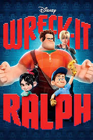
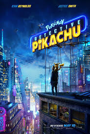
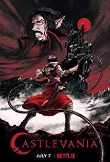
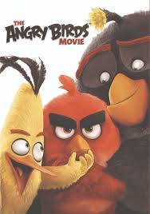

Games mean differnt things for differnt people to some its o there phone some on
its with friends.Great games can be played by all types of people of all ages.
These games that we play come in many forms and genres.The top Five games that have
affected me the most are probably...
The best games tend to pierce the mainstream Media and affect people who dont even
play video games.These Games are know throught Pop culture and that
Usally means that it can affect other aspects of mainstream culture
and media.Sometimes this means a direct adaptation of a game into a movie
or the game could just inspire a movie.Sometimes just the inclusion of an
iconic video game character Shows Influence. Some examples are...